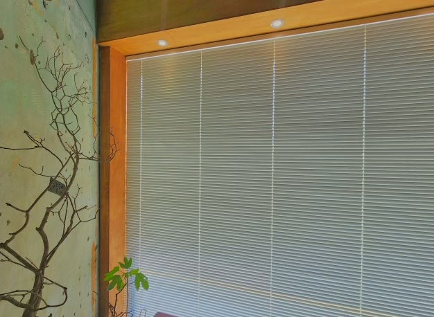
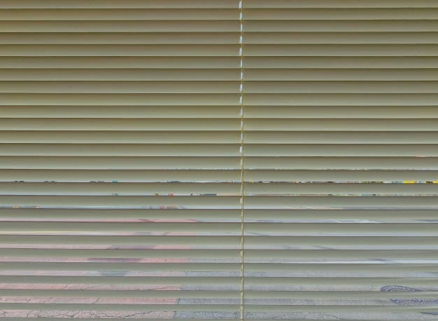
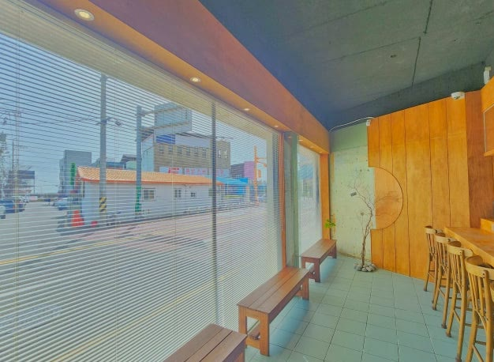
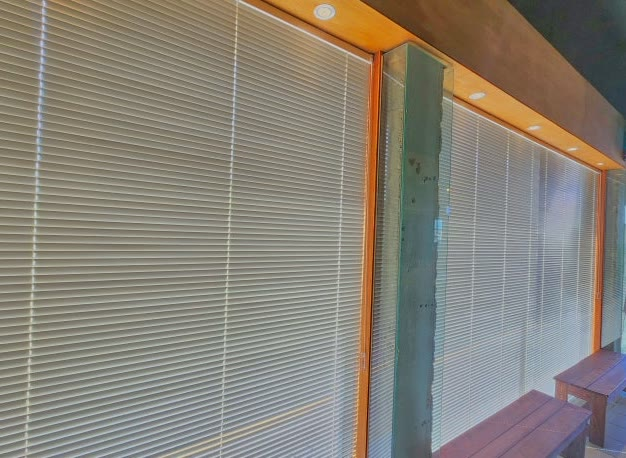

2026년 6월 21일 시공
경산 중방동 카페
우드블라인드 시공후기

경산 중방동에 새로 문을 여는 카페에 다녀왔습니다.
1층 도로변 자리라, 큰 통창이 여러 개 나 있는 곳이었습니다.
가서 보니 사장님이 왜 블라인드를 고민하셨는지 바로 알겠더라고요.
도로변이라 지나는 사람 시선이 매장 안으로 그대로 들어오고, 서향이라 오후 햇빛도 만만치 않았습니다.
손님 입장에서도 길에서 훤히 보이는 자리는 아무래도 부담스럽습니다.
이 창들에 알루미늄 우드블라인드 25mm 슬랫을 달았습니다.
카페에는 왜 우드블라인드인가
새로 여는 카페라 첫인상이 무엇보다 중요했습니다.
그렇다고 빛을 완전히 막아 매장을 어둡게 만들 수는 없습니다.
낮에는 적당히 환하게, 필요할 때는 시선과 햇빛을 가리는 유연한 조절이 핵심이었습니다.
우드블라인드는 슬랫 각도를 돌려 빛과 시선을 자유롭게 조절하는 것이 가장 큰 장점입니다.
슬랫을 비스듬히 두면 위에서 드는 빛은 부드럽게 들이면서 바깥에서 안을 들여다보는 시선은 차단됩니다.
햇빛이 강한 오후엔 각도를 더 닫아 눈부심을 줄일 수 있습니다.

알루미늄 25mm 슬랫을 고른 이유
소재는 알루미늄으로 잡았습니다.
알루미늄은 원목보다 가볍고 습기·온도 변화에 강합니다.
통창처럼 큰 창이나 사람이 많이 드나드는 상업 공간에서 관리가 편합니다.
25mm 슬랫은 깔끔하면서도 시야가 답답하지 않아, 매장 분위기를 산뜻하게 만들어 줍니다.

색은 매장 우드 톤에 맞췄습니다
색은 매장의 우드 톤 마감에 맞춰 화이트·아이보리로 통일했습니다.
밝은 톤이라 공간이 넓어 보이고, 나무 질감의 인테리어와 부딪히지 않으면서 단정하게 떨어집니다.
블라인드가 인테리어의 일부처럼 녹아들어, 새로 문을 여는 매장의 첫인상을 해치지 않습니다.
시간대별로 채광 조건이 바뀌는 카페에 슬랫 각도 조절은 특히 잘 맞습니다.

통창이 많아 창마다 나눠 시공했습니다
대형 통창이 여러 개인 데다 기둥으로 창이 분할되어 있었습니다.
각 창을 따로 실측해 슬랫 폭과 길이를 맞췄습니다.
분할된 창은 블라인드를 창마다 나눠 달아야 여닫기와 각도 조절이 편하고, 라인이 가지런하게 떨어집니다.
큰 통창은 무게와 조작감을 고려해 단단하게 고정했습니다.

관리 팁
알루미늄 우드블라인드는 평소 마른 천이나 먼지떨이로 슬랫 결을 따라 살살 닦아 주시면 됩니다.
카페처럼 사람이 많은 공간은 먼지가 잘 앉으니, 주기적으로 가볍게 닦아 주시면 오래 깨끗하게 쓰실 수 있습니다.
새로 문을 여는 카페라 첫인상과 손님이 머무는 편안함이 중요했습니다.
슬랫 각도 조절 하나로 시선 차단과 서향 눈부심을 함께 풀고, 우드 톤 인테리어와도 산뜻하게 어울리게 마감했습니다.
실측과 견적은 무료이니, 창 사진만 보내주셔도 방문 전에 대략적인 견적부터 알려드립니다.
경산을 포함한 대구·경북 전 지역 상가·사무실·아파트, 창가 고민이 있으시면 편하게 문의 주세요.